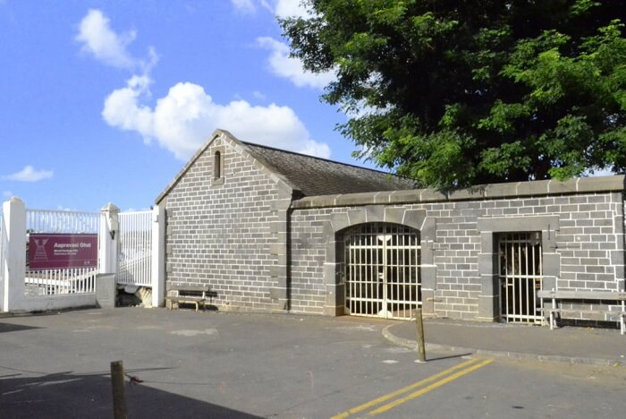
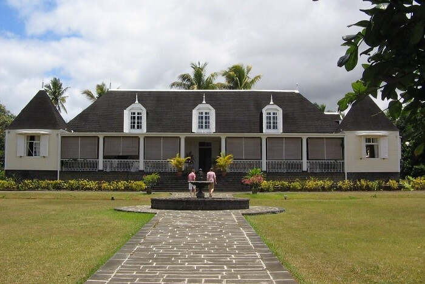
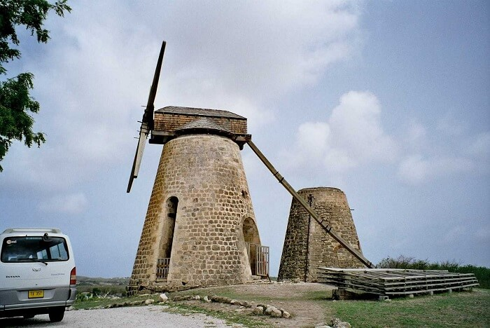
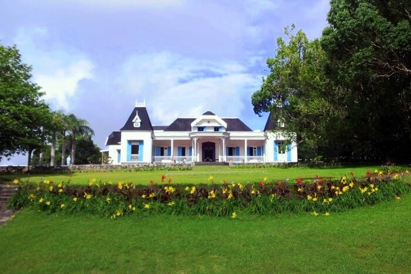
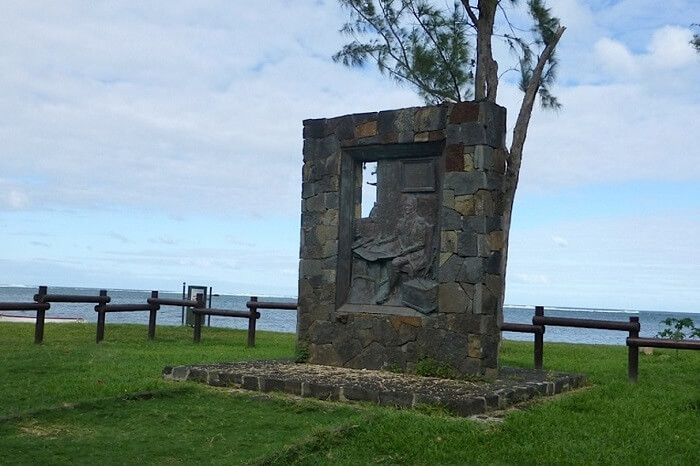

A UNESCO World Heritage Site, Aapravasi Ghat, or Immigration Depot, is a complex of buildings which were used back in the day for bonded labourers from India. The place, located on the seaside, now houses an interpretation centre. Guided tours help gain more knowledge about different structures and remains found here. Life-size models are also added to the paraphernalia, making the place more real and striking. One of the most significant historical places in Mauritius, the depot holds a mirror to the past and practices of colonialism. Between the years 1850 to 1923, almost five hundred thousand people were brought here to be shipped to different colonies of Britain around the globe.
The ruins of a French Arsenal can be found in this bay area known as Arsenal Bay, located in the north of the country. One of the lesser known historical places of Mauritius, the village of Arsenal was home to a French foundry, which produced cannons and all other kinds of military supplies. However, it was destroyed back in 1774 due to an explosion killing around 300 slaves.

One of the best historical places in Mauritius, the plantation of St. Aubin goes back almost two hundred years. The factory was shifted in the seventies and the estate no longer deals in sugar. However, the lawns of this huge house are now home to a rum distillery. There is a vanilla house, spice garden, tropical garden here as well.

Another sugar factory, the Beau Plan serves as a museum, placing it on every list of top historical places in Mauritius. The exhibition here covers the tale of sugar, crisscrossing with the history of the island, rum trade as well as the practice of slavery. The tour will take anywhere from two to three hours. The factory itself was started back in 1797, and it was closed down on the turn of the century in 1999. The museum also has videos as well as interactive sessions where you can gain more knowledge about the history of the place.
The five towers were built back in 1800’s by the British to protect their colony from the French, who apparently were trying to instigate the slaves. The tower located at La Preneuse is now serving as a museum where experts explain the incredible architecture of the towers. Apparently, these towers are all three metres thick, with copper cannons which could shoot at a range of about 2 kilometres.

Built in the early 1800’s as a grand mansion, this place is a museum now, providing an insight into the colonial past of the country. The house itself bears characteristics of tropical architecture with about 109 doors and a large number of rooms to keep the place cool even in scorching summers. The place houses many antiques, pieces of furniture and maps dating back to French East India Company along with servant quarters and kitchens

Another UNESCO World Heritage Site, the place is undoubtedly one of the most famous places of historical interest in Mauritius. It is simply a mountain located southwest of the island, which provided shelter to a number of slaves who dared to run away from their masters back in the day. Given the place’s dangerous, inaccessible topography, the slaves who got away created their own communities here and stayed in the caves. The place is a huge symbol of their fight for freedom and the uncrushable human spirit.

Built only 15 years back in 2003, this is one of the few historical monuments in Mauritius. The place is dedicated to Matthew Flinders, the English cartographer and explorer, who first identified Australia as a continent. It commemorates the two hundredth anniversary of his arrival in the country. Interestingly, when he first arrived on the island, he got imprisoned for six years as England and France were at war.

Also known as Fort Adelaide, this military building was built by the British back in the nineteenth century. You can enjoy panoramic views of the capital, Port Louis, as well as the harbour from the top. The barracks of the old times have been converted into boutiques where you can pick souvenirs up from.
Bois Cheri is a famous tea plantation, which is one of three most prominent stops on La Route du Thé. Located around twelve kilometres from the famous Rivière des Anguilles, these tea gardens cover an area of about 250 hectares. You can book a tour of the premises where you will get to know in deep about the history as well as the functioning of the plantation, making it one of the must-visit historical places in Mauritius. There is an exhibition space here as well, showcasing the centuries of history of this place.